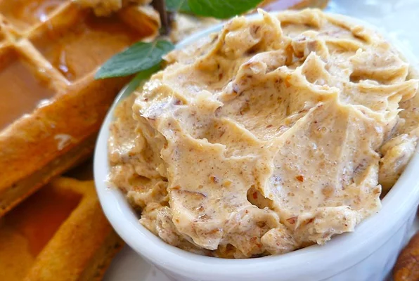

Toasted Pecan Butter

Description
This is a great old Maine recipe, moist and spicy.
The bread actually tastes even better the day after it is baked. Great for holiday gift giving!
Ingredients
- ½ cup chopped pecans
- ¼ cup light brown sugar
- 1 cup butter at room temperature
- 1 teaspoon vanilla extract
Steps
- Preheat oven to 325 degrees F/165 degrees C.
- Spread the pecans onto a baking sheet; toast in the preheated oven until they start to turn golden brown and become fragrant, about 15 minutes.
Watch carefully as they bake, they burn quickly.
Set aside to cool to room temperature.
- Pulse the brown sugar, butter, and vanilla together in a food processor several times to thoroughly combine.
Butter will be slightly fluffy.
Sprinkle in the cooled nuts and pulse several times to combine.
For more finely ground pecans, pulse several more times.
Serve immediately, or pack into a jar with a lid and refrigerate.